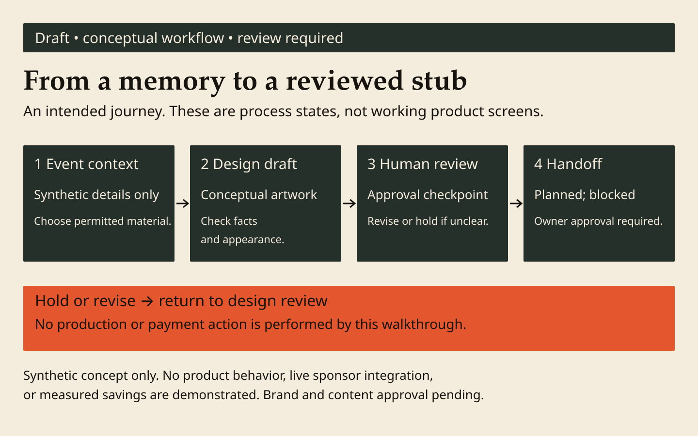

Draft comparison only • brand approval pending
Demo treatment beside canonical draft guidance
Reference from pinned sources
This panel summarizes SPEC/tokens/voice. It is not a screenshot of an approved brand board or product.
Night ink
#17140FStage moss
#26302ATicket orange
#E4572EHolo cyan
#7CC6D2
#17140FStage moss
#26302ATicket orange
#E4572EHolo cyan
#7CC6D2
Page: stub cream #F4ECDD.
Display fallback: Georgia serif.
Body fallback: system sans.
Use short actions and clear status. Keep master-brand chrome distinct from customer stub artwork.
Product and landing references are documentation only: review before authorized production; no live route or purchase is demonstrated.
Pinned SPEC · tokens · voice
Reference revision: 3822635aff507cd5918a08a0c636bb0e41705261BK-03B #14 / BK-09 #15 approval pending
Actual collateral candidate

Open actual editable source at full size

Author comparison: palette and fallback roles align with the draft reference. No logos/font binaries copied. Medium-specific layout remains subject to brand and landing reviewer approval.